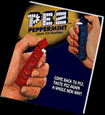

PEZ candy was orignally created in 1927 in Vienna, Austria. The actual PEZ dispenser was not invented until 1948, created by Eduard Haas III. The first candies were  only available in peppermint (the german word is pfefferminz) and were targeted at the adult smoker. This explains the shape of the first dispensers...they looked like cigarette lighters.Haas Food Manufacturing Corporation didn't change their name to Pez Candy Inc. until sometime in the 1970's. Previously, their company motto was "A Treat to Eat in a Puppet That's Neat!" The first American PEZ factory was built in New York while importing the candy from Europe...but was then moved in 1972 to a factory in Orange, Connecticut. It is here that the business currently remains, with Scott McWhinnie as President and CEO. As explained in the PEZ FAQ, the company does not give tours of the factory because it is an FDA regulated plant. It has been pointed out that wineries are also FDA regulated...yet give tours, but PEZ Candy still does not.  All other material ©2000, Jamie Gerdes. Any information or opinions expressed herein can be blamed on the senseless actions of a PEZ addict. |